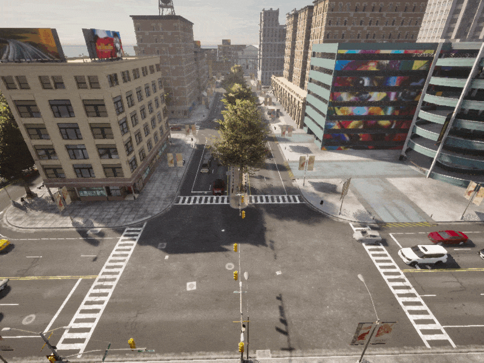

交通管理器¶
当我们训练神经网络来控制自动驾驶车辆时，自动驾驶代理必须应对的关键挑战之一是其他道路使用者。除了识别和导航道路网络拓扑以及维护车道规则的任务之外，自动驾驶代理还必须识别其他车辆并预测对其计划行动方案的影响。Carla 的交通管理器能够管理通过模拟导航的车辆群，并为感兴趣的车辆（即我们正在训练或控制的车辆）设置障碍和挑战。在 Carla 文献中，我们将这种车辆称为“自我车辆”以示区别。
交通管理器管理地图内非玩家参与者车辆的行为和生命周期，用车辆填充模拟，其行为与其他道路使用者在真实道路网络上的行为相同。在本教程中，我们将介绍交通管理器的一些功能以及如何在模拟中使用它来创建和控制非玩家参与者。
设置模拟器并初始化交通管理器¶
首先，我们将初始化交通管理器并创建一些随机分布在城市周围的流量。
import carla
import random
# 客户端连接并获取时间对象
client = carla.Client('localhost', 2000)
world = client.get_world()
# 以同步模式启动模拟器
settings = world.get_settings()
settings.synchronous_mode = True # Enables synchronous mode
settings.fixed_delta_seconds = 0.05
world.apply_settings(settings)
# 以同步模式启动交通管理器
traffic_manager = client.get_trafficmanager()
traffic_manager.set_synchronous_mode(True)
# 如果有必要设置一个种子，以便能够重现行为
traffic_manager.set_random_device_seed(0)
random.seed(0)
# 启动观察者以便能开到所做的事
spectator = world.get_spectator()
生成车辆¶
当我们创建交通管理器车辆时，它们需要一个生成的地图位置。我们可以使用自己选择的地图坐标自行定义这些。然而，为了解决这个问题，每个 Carla 地图都有一组预定义的生成点，均匀分布在整个道路网络中。我们可以使用这些生成点来生成我们的车辆。
spawn_points = world.get_map().get_spawn_points()
我们可以使用 Carla 的调试功能来查看生成点在哪里。运行以下代码，然后飞过地图并检查生成点的位置。当我们想要选择更具体的点用于生成或引导车辆时，这会派上用场。
# 在地图上以数字绘制生成点的位置
for i, spawn_point in enumerate(spawn_points):
world.debug.draw_string(spawn_point.location, str(i), life_time=10)
# 在同步模式下，我们需要运行模拟来飞行观察则会
while True:
world.tick()
现在让我们生成一些车辆。
# 从蓝图库中选择一些模型
models = ['dodge', 'audi', 'model3', 'mini', 'mustang', 'lincoln', 'prius', 'nissan', 'crown', 'impala']
blueprints = []
for vehicle in world.get_blueprint_library().filter('*vehicle*'):
if any(model in vehicle.id for model in models):
blueprints.append(vehicle)
# 设置车辆的最大数目并准备我们生成的一个列表
max_vehicles = 50
max_vehicles = min([max_vehicles, len(spawn_points)])
vehicles = []
# 对生成点进行随机采样并生成一些车辆。
for i, spawn_point in enumerate(random.sample(spawn_points, max_vehicles)):
temp = world.try_spawn_actor(random.choice(blueprints), spawn_point)
if temp is not None:
vehicles.append(temp)
# 运行模拟以便我们能查看观察者的结果
while True:
world.tick()
如果您现在与观察者一起飞过地图，您应该会看到静止的车辆占据地图中的道路。
使用交通管理器控制车辆¶
现在我们可以让交通管理器控制我们的车辆并让模拟运行。一旦交通管理器控制了车辆，它们就会在道路上自主移动，遵循道路网络的特征，如车道和红绿灯，并避免与其他车辆发生碰撞。
交通管理器具有许多功能，允许修改每辆车的特定行为。在下面的例子中，我们为每辆车设置了忽略红绿灯的随机概率，因此有些车辆会倾向于忽略红绿灯，而另一些车辆则会遵守红绿灯。可以设置多种不同的行为，有关详细信息，请参阅 Python API 参考。
# 解析所生成车辆的列表并通过set_autopilot()将控制权交给交通管理器
for vehicle in vehicles:
vehicle.set_autopilot(True)
# Randomly set the probability that a vehicle will ignore traffic lights
traffic_manager.ignore_lights_percentage(vehicle, random.randint(0,50))
while True:
world.tick()
如果您现在与观察者一起飞过地图，您将看到车辆在地图上自动行驶。

指定车辆行驶路线¶
在前面的步骤中，我们了解了如何在地图中生成一组车辆，然后将它们的控制权交给交通管理器，以创建一个充满移动交通的繁忙城镇。交通管理器具有更深入的功能，可以更紧密地控制车辆的行为。
我们现在将使用traffic_manager.set_path()功能引导交通管理器车辆沿着特定路径行驶。在这种情况下，我们将创建两条汇聚的交通流，它们将在市中心汇聚并造成拥堵。
首先，我们将选择一些路径点来构建我们的路径。生成点是方便的路径点，与之前一样，我们可以使用 Carla 的调试工具在地图上绘制生成点的位置。通过与观察者一起飞过地图，我们可以选择要用于路径的生成点的索引。该函数使用指定为 carla.Locations 的坐标列表。
# 在地图上使用数字绘制生成点的位置
for i, spawn_point in enumerate(spawn_points):
world.debug.draw_string(spawn_point.location, str(i), life_time=10)
# 在同步模式下，我们需要运行模拟使观察者飞过场景
while True:
world.tick()
我们选择生成点和路径点来在城镇内创建两条汇聚的交通流，从而造成拥堵，这可能是向自动驾驶代理展示的一个有趣的场景。
spawn_points = world.get_map().get_spawn_points()
# 路线 1
spawn_point_1 = spawn_points[32]
# 从所选择的生成点中创建路线 1
route_1_indices = [129, 28, 124, 33, 97, 119, 58, 154, 147]
route_1 = []
for ind in route_1_indices:
route_1.append(spawn_points[ind].location)
# 路线 2
spawn_point_2 = spawn_points[149]
# 从所选择的生成点中创建路线 2
route_2_indices = [21, 76, 38, 34, 90, 3]
route_2 = []
for ind in route_2_indices:
route_2.append(spawn_points[ind].location)
# 现在让我们在地图上打印出它们，以便我们能看到我们的路径
world.debug.draw_string(spawn_point_1.location, 'Spawn point 1', life_time=30, color=carla.Color(255,0,0))
world.debug.draw_string(spawn_point_2.location, 'Spawn point 2', life_time=30, color=carla.Color(0,0,255))
for ind in route_1_indices:
spawn_points[ind].location
world.debug.draw_string(spawn_points[ind].location, str(ind), life_time=60, color=carla.Color(255,0,0))
for ind in route_2_indices:
spawn_points[ind].location
world.debug.draw_string(spawn_points[ind].location, str(ind), life_time=60, color=carla.Color(0,0,255))
while True:
world.tick()

现在我们已经选择了生成点和路径点，现在我们可以开始生成交通并将生成的车辆设置为遵循我们的路径点列表。
# 在生成时间之间设置延迟以创建空隙
spawn_delay = 20
counter = spawn_delay
# 设置最大车辆（为更低的硬件设置更小的值）
max_vehicles = 200
# 在生成点之间轮流
alt = False
spawn_points = world.get_map().get_spawn_points()
while True:
world.tick()
n_vehicles = len(world.get_actors().filter('*vehicle*'))
vehicle_bp = random.choice(blueprints)
# 仅在延迟之后生成车辆
if counter == spawn_delay and n_vehicles < max_vehicles:
# Alternate spawn points
if alt:
vehicle = world.try_spawn_actor(vehicle_bp, spawn_point_1)
else:
vehicle = world.try_spawn_actor(vehicle_bp, spawn_point_2)
if vehicle: # 如果车辆成功生成
vehicle.set_autopilot(True) # 将车辆的控制全交给交通管理器
# 设置交通管理器车辆控制的参数，我们不想变道
traffic_manager.update_vehicle_lights(vehicle, True)
traffic_manager.random_left_lanechange_percentage(vehicle, 0)
traffic_manager.random_right_lanechange_percentage(vehicle, 0)
traffic_manager.auto_lane_change(vehicle, False)
# 在生成点之间轮流
if alt:
traffic_manager.set_path(vehicle, route_1)
alt = False
else:
traffic_manager.set_path(vehicle, route_2)
alt = True
vehicle = None
counter -= 1
elif counter > 0:
counter -= 1
elif counter == 0:
counter = spawn_delay
通过上面的代码，我们在交通管理器 set_path() 功能的引导下创建了来自地图两侧的两个汇聚的流量流。这导致市中心道路拥堵。这种技术可以更大规模地用于模拟自动驾驶车辆的多种棘手情况，例如繁忙的环岛或高速公路交叉口。